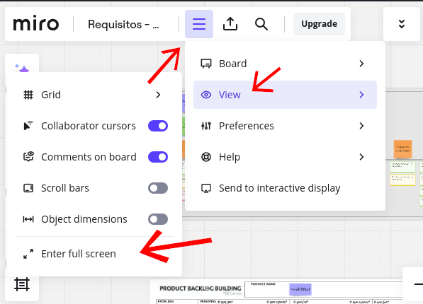

USM - ComunEventos
User Story Mapping (USM) é uma técnica de visualização usada para entender as necessidades e jornadas dos usuários ao interagir com um produto ou serviço. Ela ajuda equipes de desenvolvimento, designers e stakeholders a organizarem e priorizarem as funcionalidades e requisitos do produto de forma colaborativa.
ComunEventos
A ComunEventos é uma startup criada por três jovens empreendedores que, após participar de eventos comunitários, identificaram a necessidade de otimizar a experiência para organizadores e participantes. A missão da empresa é desenvolver uma plataforma online que facilite a organização e promoção desses eventos, promovendo um ecossistema digital para que a comunidade se conecte e participe de atividades que reflitam seus valores. Eventos comunitários, como feiras, workshops e atividades culturais, são importantes para fortalecer laços sociais e promover a coesão na comunidade, permitindo que as pessoas se conectem, aprendam e trabalhem juntas para melhorar seu ambiente.
A plataforma irá permitir que Organizadores de Eventos consigam contatar Patrocinadores e Voluntários para organizar os eventos e também promovê-los por meio da plataforma, para que os Participantes interessados consigam ver os detalhes dos eventos, comprar ingressos e ir aos eventos.
USM:
Foram produzidas 88 Histórias de Usuários, portanto nas tabelas abaixo só foi possível apresentar os Títulos. Para verificar as Histórias de Usuário é necessário expandir os Cards de Título de História de Usuário no Miro (acima), conforme o tutorial:
Como verificar as Histórias de Usuário:
Primeiramente, coloque em tela cheia para facilitar a visualização: 
Aproxime do Card que deseja verificar a US, em seguida selecione-o, por fim, aperte o botão com ícone de Expadir:

Desça até a descrição do Card, onde se encontra a História de Usuário:

Observação: Caso seja necessário necessário fazer auditoria do último horário onde foram realizadas modificações no quadro Miro para verificar fraude, por favor entrar em contato com a equipe, pois apenas membros com permissão de edição conseguem visualizar o histórico do quadro. E a mensagem de "Última Modificação" apresentada ao abrir o quadro, geralmente é atualizada mesmo sem modificações relevantes.
Visualização como Tabela (Não detalha as US's)
Organizador do Evento
| Objetivos do Usuário | Jornada do Usuário | Título das Histórias |
|---|---|---|
| Fechar com patrocinadores | Buscar patrocinadores | - Pesquisar patrocinadores que se encaixam com o evento - Criar uma lista de potenciais patrocinadores - Contatar os potenciais patrocinadores |
| Fechar com patrocinadores | Apresentar proposta para patrocinadores | - Enviar proposta aos patrocinadores - Acompanhar o retorno |
| Fechar com patrocinadores | Formalizar contrato | - Visualizar os termos do contrato - Assinar o contrato |
| Fechar com fornecedores | Encontrar fornecedores | - Definir os serviços ou produtos - Criar lista de fornecedores em potencial - Contatar esses fornecedores |
| Fechar com fornecedores | Estabelecer um acordo | - Visualizar os termos do acordo - Assinar o contrato |
| Recrutar voluntários | Recrutar voluntários | - Definir as atividades do voluntário - Publicar vaga de voluntário - Receber inscrições - Selecionar voluntários |
| Recrutar voluntários | Orientar os voluntários | - Criar um plano de orientação |
| Recrutar voluntários | Treinar os voluntários | - Estabelecer o conteúdo do treinamento - Vincular esse conteúdo com as atividades |
| Planejar Evento | Definir tipo de evento | - Escolher o conteúdo do evento - Escolher o formato do evento - Definir o público-alvo - Definir o objetivo do evento |
| Planejar Evento | Definir data, hora e local | - Pesquisar a disponibilidade do público-alvo - Definir o local do evento - Escolher o conteúdo do evento para ter um tema definido |
| Planejar Evento | Planejar logística | - Definir a hospedagem - Estabelecer a forma de transporte - Definir a alimentação |
| Organizar inscrição | Gerenciar processo de inscrições | - Criar formulário de inscrição - Publicar formulário de inscrição - Selecionar canais de promoção - Criar o conteúdo da promoção |
| Organizar inscrição | Processar pagamentos | - Criar pagamentos - Monitorar os resultados |
| Organizar inscrição | Emitir ingressos e informações aos participantes | - Estabelecer os termos do anúncio - Criar o anúncio - Enviar o anúncio - Criar o conteúdo da promoção |
| Divulgar evento | Definir estratégia de promoção do evento e público alvo | - Definir os objetivos da promoção - Definir como promover o evento - Selecionar canais de promoção - Criar o conteúdo da promoção |
| Divulgar evento | Fazer publicações nas redes sociais | - Criar publicações - Monitorar os resultados |
| Divulgar evento | Anunciar em sites e outros meios | - Estabelecer os termos do anúncio - Criar o anúncio - Enviar o anúncio |
| Realizar evento | Coordenar fornecedores e voluntários | - Entregar feedback para fornecedores - Entregar feedback para voluntários |
| Realizar evento | Garantir espaço e equipamentos | - Receber o espaço e equipamentos - Monitorar o espaço e equipamentos |
| Realizar evento | Garantir materiais promocionais | - Receber os materiais promocionais - Analisar materiais |
| Realizar evento | Gerenciar entrada e saída dos participantes | - Monitorar a entrada e saída de cada participante - Criar um plano de entrada e saída |
Patrocinador
| Objetivos do usuário | Jornada do usuário | Título das histórias |
|---|---|---|
| Fechar com organizadores | Recebe proposta dos organizadores | - Avaliar o propósito do evento |
| Fechar com organizadores | Negocia com os organizadores | - Estabelecer o escopo do patrocínio - Determinar direitos e deveres das partes |
| Ampliar visibilidade da marca | Promove o evento | - Elaborar anúncios publicitários - Divulgar conteúdo |
| Ampliar visibilidade da marca | Cria laços com o público | - Interagir com os participantes |
| Gerenciar o impacto da participação | Coleta feedback de satisfação | - Realizar pesquisas de satisfação |
| Gerenciar o impacto da participação | Avalia o engajamento da empresa nas redes sociais | - Conferir o número de seguidores - Conferir o número de "curtidas" |
| Gerenciar o impacto da participação | Compara as vendas da empresa antes e depois do patrocínio | - Avaliar o volume das vendas - Avaliar o valor das vendas |
Voluntários
| Objetivos do usuário | Jornada do usuário | Título das histórias |
|---|---|---|
| Obter informações sobre o evento | Procura por evento de interesse | - Procurar por eventos de interesse - Procurar por meio de palavras-chave de interesse - Se informar sobre o evento |
| Participar do processo de inscrição | Se inscreve como voluntário (a) no evento | - Localizar e preenche formulário de inscrição - Selecionar as atividades desejadas - Enviar a inscrição |
| Participar do processo de inscrição | Se comunica com os organizadores | - Acessar o canal de comunicação com os organizadores - Receber mensagens - Enviar mensagens |
| Realizar treinamento | Recebe instruções de suas atividades e responsabilidades | - Acessar a página de instruções - Receber as informações básicas do evento |
| Realizar treinamento | Recebe feedback do organizador | - Receber feedback por parte do organizador |
Participante
| Objetivos do usuário | Jornada do usuário | Título das histórias |
|---|---|---|
| Ir em um evento | Procurar por eventos | - Pesquisar por eventos de interesse |
| Ir em um evento | Obter informações sobre o evento | - Checar detalhes do evento, como data e local |
| Ir em um evento | Inscrever-se no evento | - Visualizar informações do evento - Realizar cadastro na plataforma - Adquirir ingressos - Escolher ingressos, preencher dados e confirmar compra |
| Ir em um evento | Ir ao evento | - Ler a programação e horários do evento - Navegar até o local do evento |
| Dar Feedback | Publicar feedback | - Publicar um comentário sobre o evento |